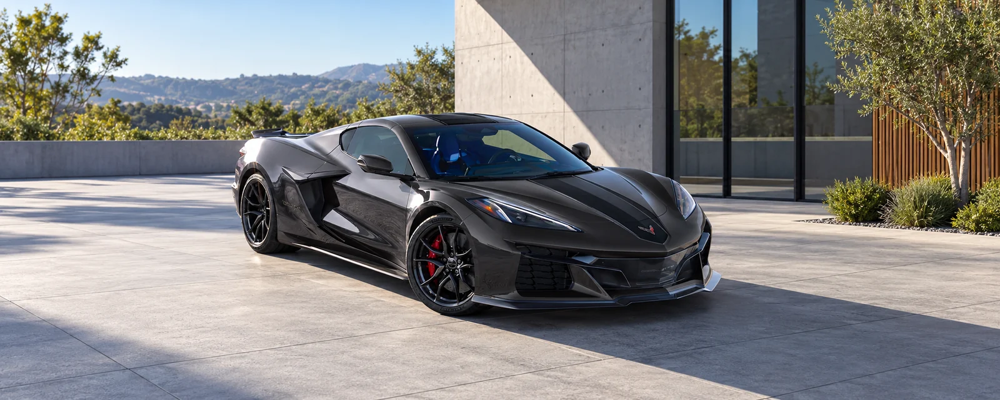
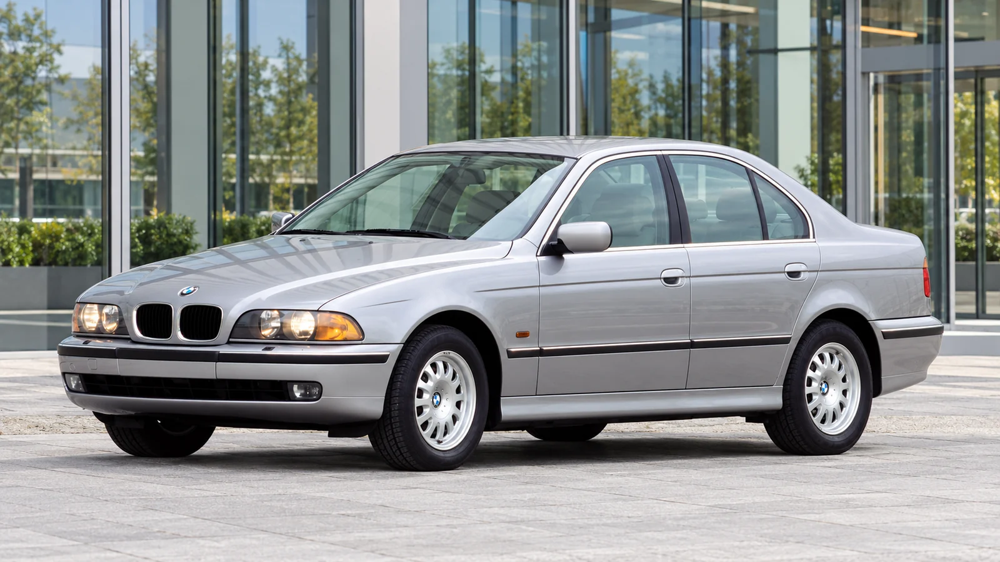

News
BMW’s 603-HP iX3 M60 Is More Than a Power Upgrade
A rear differential and adaptive chassis matter as much as the headline output. Here is what BMW has confirmed for the U.S., and what remains unknown.
Oct 12, 2026Read article →17 articles
A rear differential and adaptive chassis matter as much as the headline output. Here is what BMW has confirmed for the U.S., and what remains unknown.
Oct 12, 2026Read article →
The P10 offers a clearer picture of Volvo’s new family EV. Wheel size, measured highway range and everyday controls deserve closer attention than the biggest number in the launch campaign.
Oct 12, 2026Read article →
Published test data show extraordinary acceleration. The more interesting question is how the hybrid Corvette balances traction, tire choice and the demands of a real journey.
Oct 12, 2026Read article →
The six-cylinder E39 offers a useful way to understand the 5 Series: through proportion, chassis engineering and the demands of keeping an older car on the road.
Oct 12, 2026Read article →
Fuel savings are only one line in the budget. Use mileage, charging access, borrowing costs and resale assumptions to build a comparison you can actually check.
Oct 12, 2026Read article →
The gas CR-V is smooth and cheap to start. The hybrid costs more up front but nearly closes the gap with better torque and far better MPG.
Jul 31, 2026 Read More →
Mercedes' first electric C-Class arrives in 2027 as the C 400 4Matic, with 483 horsepower and a design that walks away from the EQ lineup's styling.
Jul 28, 2026 Read More →
The G20 generation 3 Series turned ten this year, and the mid-range 330i is still the version most people should actually buy.
Jul 24, 2026 Read More →
After eight years and 500 cars, Bugatti's quad-turbo W16 has retired. The Tourbillon that replaces it runs a naturally aspirated V16 built with Cosworth.
Jul 21, 2026 Read More →
Four years, one workshop, and a devotion to getting every rivet right.
Jul 15, 2026 Read More →
A handful of small manufacturers refuse to give up the sound.
Read More →
Battery anxiety, fast depreciation, and what it means for buyers this year.
Read More →
Long before pop culture, there was a factory in Belfast and a very risky bet.
Read More →
Banned after four seasons, its cars are now worth more than houses.
Read More →
Before touchscreens, designers treated the dash like a piece of furniture.
Read More →
Only 51 were built. The story behind them explains why.
Read More →
Provenance, paint, and paperwork — the three things that matter most.
Read More →